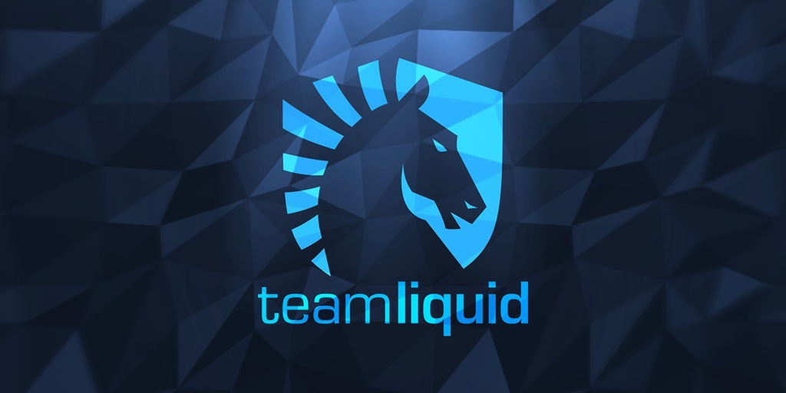
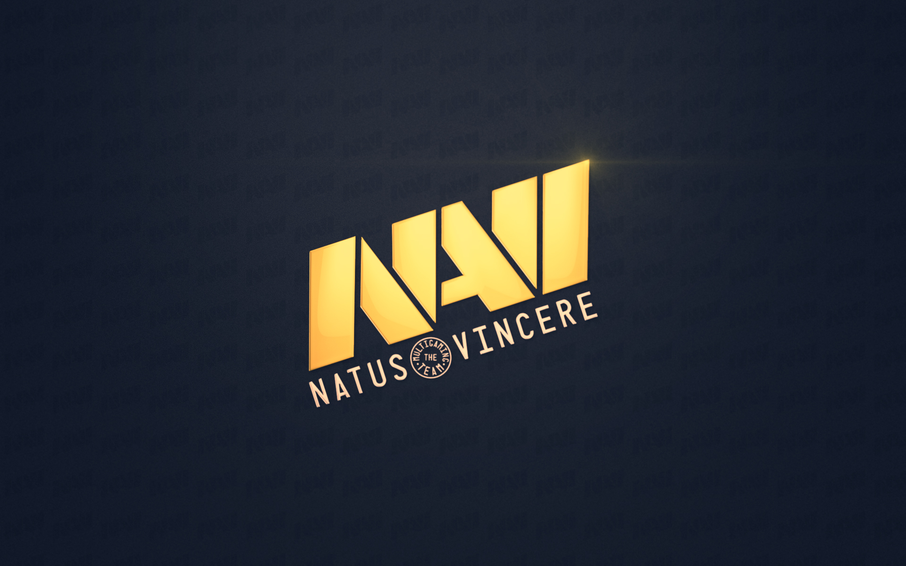
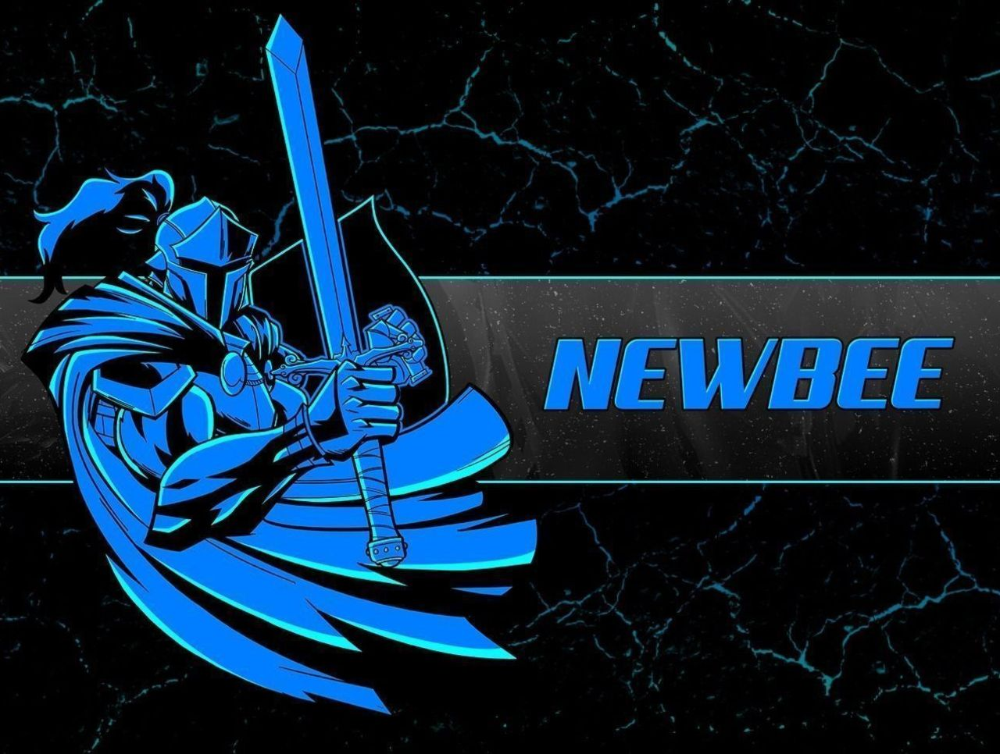

|  |  |  |
|---|---|---|
|
Why Team Liquid? Because first of all they have my favorite idol none other than Miracle. I like the way he play dota specially when he will take middle lane. For sure his opposite lane will suffer in the middle lane.I am always watching his gameplay replays at Youtube. I didn't say I want to be a miraclel ike him but his gameplay in dota it was amazing for me. |
Why Natus Vincere? "NAVI" Because most us of dota players especially wayback 2011 they are The International 1 champions.Like Team Liquid they have ace player named 'Danil Ishutin' also known Dendi. I like his attitude in the way he always chill everytime. Although sometimes they encounter loses but still he maintaning his discipline into the game |
Why Team Newbee? For me winning on Vici Gaming in The International 2014 was so unexpected because the lineup of players in the VG was so strong.But Newbee they don't give up on the first game they show to people that they deserve that trophy. Now Team Newbee have a strong lineup again, two of the have 9kMMR player so expect they will always shop up in the upcoming tournaments |